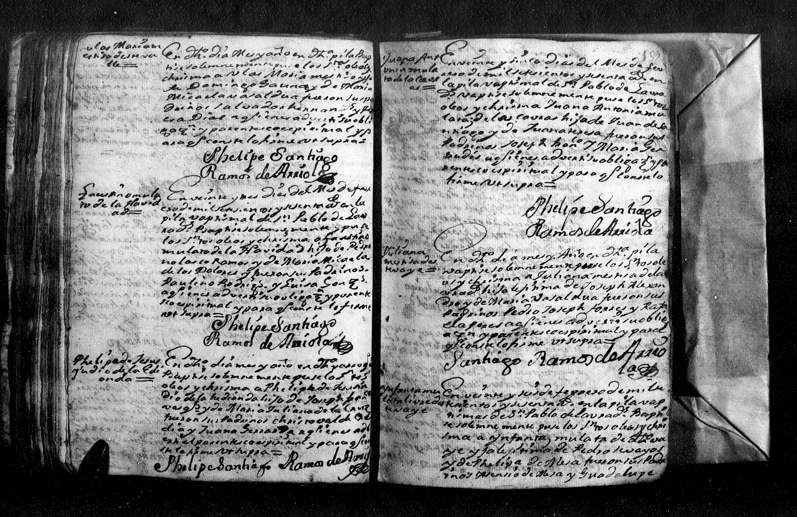

← Volver al Archivo Central
Expediente Histórico: Blas Maria Gauna Baptism 18 Feb 1760 Galeana

Manuscrito Original (Clic para ampliar)
Transcripción Paleográfica
bligacion q contraxeron. Y para q conste lo fir
me.
fr Luis
Bartholome
Velazco
Blas M.a
Esp.l
En el Valle de San Pablo de los labradores en dies y ocho dias del
mes de fevrero de mil setesientos y sesenta años yo fr. Luis
Bartholome Velazco Cura Pr.o y Ministro por S.M. de el:
Exorsize, Baptize y puse los santos oleos a Blas Maria.
Infante Español que segun dix.o su P.e nacio el dia quatro
de dho mes hijo lexitimo de Xptoval Gauna, y de Maria
Baesa: fueron sus Padrinos Miguel de Lossa, y Maria
Gauna a quienes adverti el parentezco espiritual
y obligacion q contraxeron, y para q conste lo firme
fr Luis
Bartholome
Velazco
Blas
Esp.l
En el Valle de san Pablo de los labradores en dies y ocho dias del
mes de fevrero